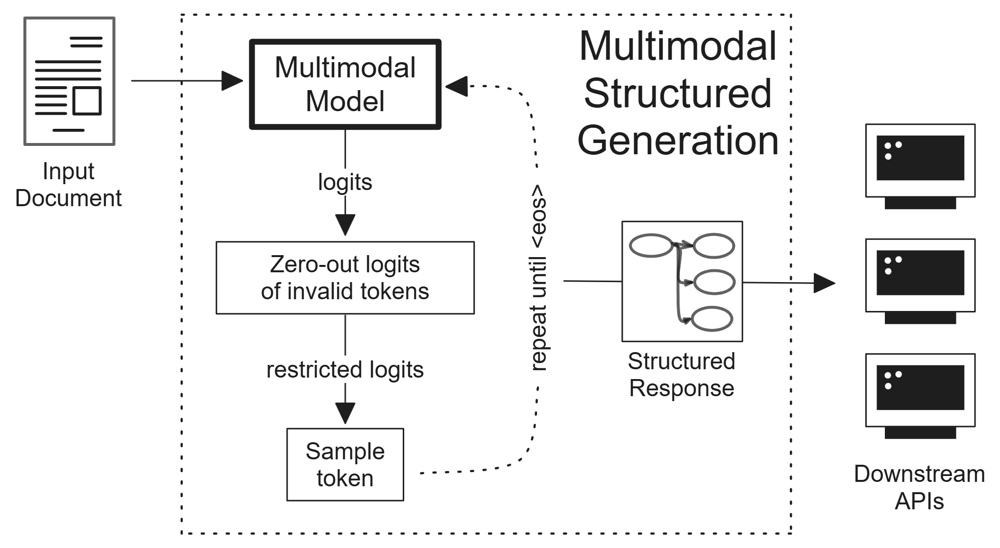

Authors: Franz Louis Cesista
Arxiv: Abstract
PDF: Multimodal Structured Generation: CVPR’s 2nd MMFM Challenge Technical Report
Code on GitHub: https://github.com/leloykun/MMFM-Challenge
Abstract
Multimodal Foundation Models (MMFMs) have shown remarkable performance on various computer vision and natural language processing tasks. However, their performance on particular tasks such as document understanding is still limited. They also require more compute, time, and engineering resources to finetune and deploy compared to traditional, unimodal models. In this report, we present Multimodal Structured Generation, a general framework which constrains the output logits of frozen MMFMs to force them to reason before responding with structured outputs that downstream APIs can parse and use. We provide a detailed account of our approach, including the technical details, theoretical discussions, and final evaluation results in the 2nd Multimodal Foundation Models Challenge hosted by the Computer Vision and Pattern Recognition (CVPR) conference. Our approach achieved the second highest score in the hidden test set for Phase 2 and third highest overall. This shows the method’s ability to generalize to unseen tasks. And that simple engineering can beat expensive & complicated modelling steps as we first discussed in our paper, Retrieval Augmented Structured Generation: Business Document Information Extraction as Tool Use. All of our scripts, deployment steps, and evaluation results can be accessed in this repository
Citation
@misc{cesista2024mmsg,
title={Multimodal Structured Generation: CVPR's 2nd MMFM Challenge Technical Report},
author={Franz Louis Cesista},
year={2024},
eprint={2406.11403},
archivePrefix={arXiv},
primaryClass={cs.CV}
}